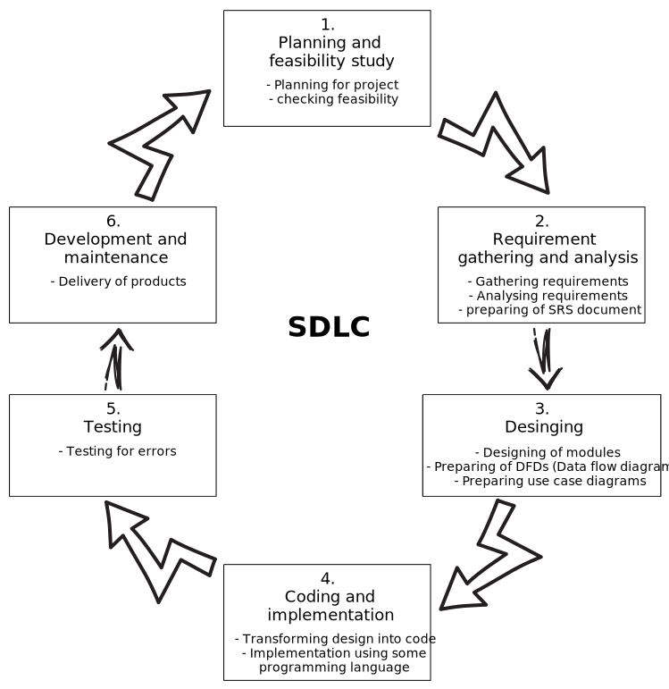
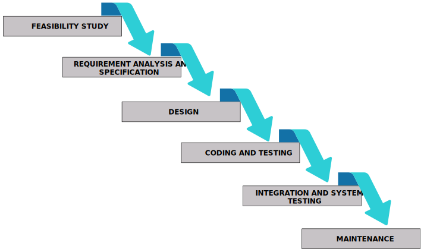
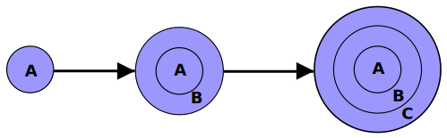
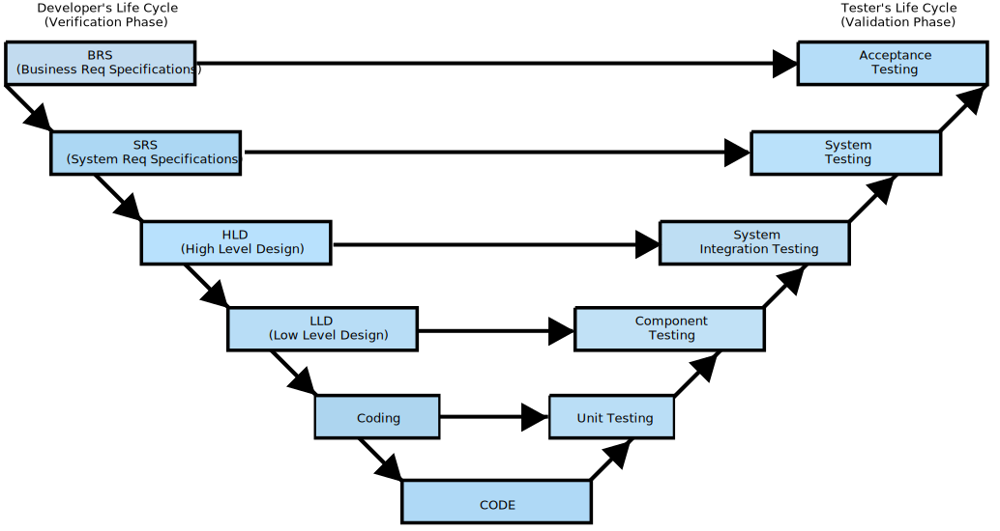

Evolving role of software
Software has undergone a transformative evolution, taking on a dual role as both a product and a delivery
mechanism. It plays a pivotal role in shaping our technological landscape, offering diverse capabilities
and serving various purposes.
- Software as a product:
- Software now functions as a product in its own right, delivering computational capabilities
either through individual computer hardware or interconnected networks of computers.
- Whether embedded within smartphones or operating within powerful mainframe computers,
software acts as an information transformer.
- It facilitates the production, management, modification, acquisition, display, and
transmission of information, ranging from single bits to complex multimedia presentations.
- software as a delivery vehicle:
- Beyond its identity as a product, software serves as the foundation for delivering and
controlling other products.
- It assumes roles such as computer control (operating systems), information communication
(networks), and program creation and management (software tools and environments).
- Software empowers the transformation of personal data, making it more useful, while also
managing business information to enhance competitiveness.
- It acts as a gateway to global information networks like the Internet and provides the means
for acquiring information.
- Role Evolution Over Two Decades:
- Over the past two decades, the role of computer software has undergone significant
transformation, propelled by technological advancements.
- Hardware performance has experienced remarkable improvements, allowing for more
sophisticated and intricate computer-based systems.
- Computing architectures have undergone profound changes, adapting to evolving demands and
challenges.
- Memory and storage capacities have grown substantially, enabling the handling of
increasingly complex data.
- Diverse input and output options have expanded, enhancing user interactions with
software-driven systems.
This evolving role of software reflects its critical influence on various aspects of our lives. From
enabling communication and data management to providing access to global information networks, software
has become an indispensable part of modern society. The synergy between hardware advancements and
software innovation has paved the way for intricate, efficient, and multifaceted computer-based systems
that define our current technological landscape.
SDLC
- SDLC stands for Software Development Life Cycle. It is a structured and systematic approach to
planning, creating, testing, deploying, and maintaining software systems. The primary purpose of
SDLC is to produce high-quality software that meets or exceeds customer expectations, is delivered
on time and within budget, and is maintainable and scalable.
- The SDLC process typically consists of several phases, which can vary depending on the specific
methodology or model being used. However, the core phases of SDLC often include:

- Planning and Feasibility:
- In this phase, the project's initial planning takes place. This involves defining the scope,
objectives, and goals of the software development project.
- Feasibility studies are conducted to assess whether the project is viable from technical,
economic, operational, and scheduling perspectives. This helps in determining whether it's
worth investing resources into the project.
- Key decisions, such as project budget, timeline, and resource allocation, are made during
this phase. It lays the foundation for the entire project.
- Requirement Gathering and Analysis:
- During this phase, detailed requirements for the software are collected from stakeholders.
This includes end-users, clients, and other relevant parties.
- The gathered requirements are documented in a comprehensive document known as the Software
Requirements Specification (SRS). The SRS outlines what the software should do, its
features, functionality, constraints, and any special considerations.
- The SRS serves as a contract between the development team and stakeholders, ensuring
everyone has a clear understanding of what the software will deliver.
- Designing:
- The design phase focuses on translating the requirements outlined in the SRS into a detailed
technical blueprint for the software.
- The Data Flow Diagram (DFD) is a graphical representation used in this phase to illustrate
how data flows through the system. It shows how data is input, processed, and output within
the software.
- System architecture, database schemas, user interfaces, and other technical aspects are
designed during this phase. The goal is to create a comprehensive plan for how the software
will be structured and function.
- Coding and Implementation:
- In this phase, developers start writing the actual code based on the design specifications.
They use programming languages and development tools to create the software.
- The code is typically divided into smaller modules or components, each of which is developed
and tested independently.
- Quality control and coding standards are crucial during this phase to ensure that the code
is maintainable, efficient, and meets the design specifications.
- Testing:
- The testing phase involves systematically evaluating the software to identify and fix
defects and ensure it meets the requirements outlined in the SRS.
- Various types of testing, such as unit testing (testing individual components), integration
testing (testing interactions between components), system testing (testing the complete
system), and user acceptance testing (testing by end-users) are performed.
- The goal is to ensure the software is reliable, secure, and performs as expected.
- Deployement and Maintenance:
- After successful testing, the software is deployed to a production environment for use by
end-users.
- The maintenance phase involves ongoing support, bug fixes, updates, and enhancements to keep
the software functional and up-to-date.
- User training and documentation may also be part of this phase to assist users in
effectively using the software.
These phases provide a structured approach to software development, ensuring that the project progresses
in an organized manner and that the final software product meets the specified requirements and quality
standards.
- Now, let's explore various software development models that provide different approaches and
methodologies for managing the software development process. These models serve as blueprints to
guide the entire lifecycle of a software project, from conception to deployment and maintenance.
Each model offers a distinct set of principles, practices, and advantages, making them suitable for
different types of projects and organizational needs. By understanding these models, you can make
informed decisions about which approach aligns best with your project's goals, constraints, and the
ever-evolving demands of software development.
Waterfall method
- The Waterfall Model was first process model.
- It is also referred to as a Liner-Sequential Life Cycle model.
- In this each phase must be completed fully before the next phase can begin.
- This type of model is basically used for small projects and there are no uncertain requirements.
- At the end of each phase, a review takes place to determine if the project is on the right path
or not.
- In this model the testing starts only after the development is complete.

classical waterfall model divides the cycle into the following phases as shown in above figure.
Feasibility Study
In this step we determine whether it would be financially and technically possible to develop the
product or not. For this following steps are taken ↓
- Characteristics of different input and output data are analyzed.
- Type of processing identified. Along with this various constraints of the system are
identified.
- After understanding the problem, engineers investigate the different possible solutions.
- Then required resources, cost of development and development time for each solution has been
calculated.
- Based on this analysis they pick the best solution and determine whether the solution is
feasible financially and technically.
Requirements Analysis and Specification
- This phase consists of two distinct activities, namely
- Requirements gathering and analysis, and
- Requirements specification
- In requirements gathering activity the project team collects all relevant information
regarding the product. For this many interviews and discussions may be required. The
requirements specification activity creates Requirements Specification (SRS) document.
Design
- In this step the requirements which are specified in the SRS document are converted into a
programming design (ER diagram, DFD, Flow Charts). Two different methods can be used: the
procedural design approach and the object-oriented design approach. So Output of this phase
is a logical structure of software.
Coding and unit testing
- In this step the programmers convert logical structure of s/w in to source code. Each
component of the design is implemented as a program module. After this each module is tested
to check whether all modules are working properly or not. The end-product of this phase is a
set of program modules that have been individually tested.
Integration and System testing
- During the integration and system testing phase, the modules are combined in a planned
manner. The different modules are never integrated in one shot. Integration is normally
carried out incrementally. During each integration step, the partially integrated system is
tested. Finally, when all the modules have been successfully integrated and tested, system
testing is carried out.
Maintenance
- Maintenance requires more efforts than the effort necessary to develop the product itself.
Maintenance involves performing any one or more of the following three kinds of activities:
- Correcting errors that were not discovered during the product development phase.
This is called corrective maintenance.
- Improving the implementation of the system, and enhancing the functionalities of the
system according to the customer’s requirements. This is called perfective
maintenance.
- Porting the software to work in a new environment. For example, porting may be
required to get the software to work on a new computer platform or with a new
operating system. This is called adaptive maintenance.
Advantages of the Waterfall Model:
- This model is simple and easy to understand and use.
- It is easy to manage due to the model's rigidity—each phase has specific deliverables and a
review process.
- In this model, phases are processed and completed one at a time without overlapping.
- The Waterfall model works well for smaller projects where requirements are very well
understood.
Disadvantages of the Waterfall Model:
- Once an application reaches the testing stage, it becomes very difficult to go back and
change something that was not well-thought-out in the concept stage.
- No working software is produced until late in the project life cycle.
- There are high levels of risk and uncertainty associated with this model.
- It is not a suitable model for complex and object-oriented projects.
- It is a poor choice for long and ongoing projects.
- It is not suitable for projects where requirements are at moderate to high risk of changing.
When to Use the Waterfall Model:
- This model is used only when the requirements are very well known, clear, and fixed.
- The product definition remains stable.
- The technology to be used is well understood.
- There are no ambiguous requirements.
- Ample resources with the required expertise are freely available.
- The project has a short duration.
Prototyping
Prototyping is defined as the process of developing a working replication of a product or system that
has to be engineered. It offers a small-scale facsimile of the end product and is used for obtaining
customer feedback as described below:
The Prototyping Model
The Prototyping Model is one of the most popularly used Software Development Life Cycle Models (SDLC
models). This model is used when the customers do not know the exact project requirements
beforehand. In this model, a prototype of the end product is first developed, tested, and refined as
per customer feedback repeatedly until a final acceptable prototype is achieved, which forms the
basis for developing the final product.
In this process model, the system is partially implemented before or during the analysis phase,
thereby giving the customers an opportunity to see the product early in the life cycle. The process
starts by interviewing the customers and developing the incomplete high-level paper model. This
document is used to build the initial prototype supporting only the basic functionality as desired
by the customer. Once the customer figures out the problems, the prototype is further refined to
eliminate them. The process continues until the user approves the prototype and finds the working
model to be satisfactory. There are four types of models available:
A) Rapid Throwaway Prototyping
This technique offers a useful method of exploring ideas and getting customer feedback for each
of
them. In this method, a developed prototype need not necessarily be a part of the ultimately
accepted prototype. Customer feedback helps in preventing unnecessary design faults and hence,
the
final prototype developed is of better quality.
B) Evolutionary Prototyping
In this method, the prototype developed initially is incrementally refined on the basis of
customer
feedback till it finally gets accepted.
C) Incremental Prototyping
In this type of incremental Prototyping, the final expected product is broken into different
small
pieces of prototypes and being developed individually. In the end, when all individual pieces
are
properly developed, then the different prototypes are collectively merged into a single final
product in their predefined order.
D) Extreme Prototyping
This method is mainly used for web development. It consists of three sequential independent
phases:
- In this phase, a basic prototype with all the existing static pages is presented in the
HTML format.
- In the 2nd phase, Functional screens are made with a simulated data process using a
prototype services layer.
- This is the final step where all the services are implemented and associated with the final
prototype.
Advantages
- The customers get to see the partial product early in the life cycle. This ensures a greater
level of customer satisfaction and comfort.
- New requirements can be easily accommodated as there is scope for refinement.
- Missing functionalities can be easily figured out.
- Errors can be detected much earlier thereby saving a lot of effort and cost, besides enhancing
the quality of the software.
- Flexibility in design.
Disadvantages
- Costly w.r.t time as well as money.
- There may be too much variation in requirements each time the prototype is evaluated by the
customer.
- Poor Documentation due to continuously changing customer requirements.
- It is very difficult for developers to accommodate all the changes demanded by the customer.
- There is uncertainty in determining the number of iterations that would be required before the
prototype is finally accepted by the customer.
- After seeing an early prototype, the customers sometimes demand the actual product to be
delivered soon.
- Developers in a hurry to build prototypes may end up with sub-optimal solutions.
- The customer might lose interest in the product if he/she is not satisfied with the initial
prototype.
Use
The Prototyping Model should be used when the requirements of the product are not clearly understood
or are unstable. It can also be used if requirements are changing quickly. This model can be
successfully used for developing user interfaces, high technology software-intensive systems, and
systems with complex algorithms and interfaces. It is also a very good choice to demonstrate the
technical feasibility of the product.
Incremental Model
The incremental process model is also known as the Successive version model. First, a simple working
system developed with a few basic features and delivered to the customer. Then thereafter many
successive iterations/ versions are implemented and delivered to the customer until the desired
system is released.

A, B, and C are modules of Software Products that are incrementally developed and delivered.
Activities:
- Requirements are broken down into several modules that can be incrementally constructed and
delivered.
- At any time, the plan is made just for the next increment. Therefore, it is easier to modify
the
version as per the need of the customer.
- The Development Team first develops core features of the system.
- Once the core features are fully developed, then these are refined to add new functions in
Successive versions.
- As each successive version of the feedback of the Customer is taken and feedback is
incorporated
into the next version.
- Each version of the software has more additional features than the previous ones.
Types of Incremental Model:
- Staged Delivery Model: Construction of only one part of the project at a time.
- Parallel Development Model: Different subsystems are developed at the same time. It can
decrease
the calendar time needed for the development, i.e. TTM (Time to Market).
When to Use This Model:
- Funding Schedule, Risk, Program Complexity, or need for early realization of benefits.
- When Requirements are known up-front.
- When Projects have lengthy development schedules.
- Projects with new Technology.
- Requires good planning and design.
- The total cost is not lower.
- Well-defined module interfaces are required.
Advantages:
- Prepares the software fast.
- Clients have a clear idea of the project.
- Changes are easy to implement.
- Provides risk handling support because of its iterations.
Disadvantages:
- A good team and proper planned execution are required.
- Because of its continuous iterations, the cost increases.
RAD Model (Rapid Application Development)
RAD Model or Rapid Application Development Model is similar to the incremental model and waterfall
model. In RAD Model, development should be done in a specified time frame.
RAD Model is suitable for small projects where all the requirements are gathered before starting
development of the project. Once the client gives feedback, based on the client’s feedback, other
changes are done. This process goes parallel with cooperation with the client and developers. Each
software version is delivered to the client with working functionality, and changes are made based
on the client’s feedback. Development moves faster in RAD Model with minimum errors. RAD Model
follows the incremental delivery of the modules. The main goal of RAD Model is to make the
reusability of the developed components.
Phases in RAD Model:
- Business Modeling
- Data Modeling
- Process Modeling
- Application Modeling
- Testing and Turnover
Business Modeling:
In this phase of development, a business model should be designed based on the information
available
from different business activities. Before starting the development, there should be a complete
picture of the business process functionality.
Data Modeling:
Once the business modeling phase is over and all the business analysis is completed, all the
required
and necessary data based on business analysis are identified in the data modeling phase.
Process Modeling:
All the data identified in the data modeling phase are planned to process or implement the
identified
data to achieve the business functionality flow. In this phase, all the data modification
processes
are defined.
Application Modeling:
In this phase, the application is developed, and coding is completed. With the help of automation
tools, all data is implemented and processed to work in real-time.
Testing and Turnover:
All the testing activities are performed to test the developed application.
Advantages of RAD Model:
- Fast application development and delivery.
- Less testing activity required.
- Visualization of progress.
- Less resources required.
- Review by the client from the very beginning of development, so very less chance to miss the
requirements.
- Very flexible if any changes are required.
- Cost-effective.
- Good for small projects.
Disadvantages of RAD Model:
- Highly skilled resources required.
- Client’s feedback required on each development phase.
- Automated code generation is very costly.
- Difficult to manage.
- Not a good process for long-term and big projects.
- Proper modularization of project required.
When RAD Model Should Be Followed:
- For low budget projects for which automated code generation cost is low.
- When highly skilled resources are available.
- When it’s easy to modularize the project.
- If technical risks are low.
- If development needs to be completed in a specified time.
- RAD Model is suitable if the functionality has fewer dependencies on other functionality.
Spiral Model
The Spiral model is one of the most important Software Development Life Cycle models, which provides
support for Risk Handling. In its diagrammatic representation, it looks like a spiral with many
loops. The exact number of loops of the spiral is unknown and can vary from project to project. Each
loop of the spiral is called a Phase of the software development process. The exact number of phases
needed to develop the product can be varied by the project manager depending upon the project risks.
As the project manager dynamically determines the number of phases, so the project manager has an
important role to develop a product using the spiral model.
The Radius of the spiral at any point represents the expenses (cost) of the project so far, and the
angular dimension represents the progress made so far in the current phase.
The above diagram shows the different phases of the Spiral Model:
Phases in Spiral Model:
- Objectives determination and identify alternative solutions: Requirements are gathered from
the
customers and the objectives are identified, elaborated, and analyzed at the start of every
phase. Then alternative solutions possible for the phase are proposed in this quadrant.
- Identify and resolve Risks: During the second quadrant, all the possible solutions are
evaluated
to select the best possible solution. Then the risks associated with that solution are
identified and the risks are resolved using the best possible strategy. At the end of this
quadrant, the Prototype is built for the best possible solution.
- Develop the next version of the Product: During the third quadrant, the identified features
are
developed and verified through testing. At the end of the third quadrant, the next version
of
the software is available.
- Review and plan for the next Phase: In the fourth quadrant, the Customers evaluate the so
far
developed version of the software. In the end, planning for the next phase is started.
Risk Handling in Spiral Model
A risk is any adverse situation that might affect the successful completion of a software project.
The most important feature of the spiral model is handling these unknown risks after the project has
started. Such risk resolutions are easier done by developing a prototype. The spiral model supports
coping up with risks by providing the scope to build a prototype at every phase of the software
development.
The Prototyping Model also supports risk handling, but the risks must be identified completely before
the start of the development work of the project. But in real-life project risk may occur after the
development work starts; in that case, we cannot use the Prototyping Model. In each phase of the
Spiral Model, the features of the product dated and analyzed, and the risks at that point in time
are identified and are resolved through prototyping. Thus, this model is much more flexible compared
to other SDLC models.
Why Spiral Model is called Meta Model?
The Spiral model is called a Meta-Model
because it subsumes all the other SDLC models. For example, a single loop spiral actually represents
the Iterative Waterfall Model. The spiral model incorporates the stepwise approach of the Classical
Waterfall Model. The spiral model uses the approach of the Prototyping Model by building a prototype
at the start of each phase as a risk-handling technique. Also, the spiral model can be considered as
supporting the Evolutionary model – the iterations along the spiral can be considered as
evolutionary levels through which the complete system is built.
Advantages of Spiral Model:
- Risk Handling: The projects with many unknown risks that occur as the development proceeds, in
that case, Spiral Model is the best development model to follow due to the risk analysis and
risk handling at every phase.
- Good for large projects: It is recommended to use the Spiral Model in large and complex
projects.
- Flexibility in Requirements: Change requests in the Requirements at a later phase can be
incorporated accurately by using this model.
- Customer Satisfaction: Customer can see the development of the product at the early phase of the
software development and thus, they habituated with the system by using it before completion of
the total product.
Disadvantages of Spiral Model:
- Complex: The Spiral Model is much more complex than other SDLC models.
- Expensive: Spiral Model is not suitable for small projects as it is expensive.
- Too much dependability on Risk Analysis: The successful completion of the project is very much
dependent on Risk Analysis. Without very highly experienced experts, it is going to be a failure
to develop a project using this model.
- Difficulty in time management: As the number of phases is unknown at the start of the project,
so time estimation is very difficult.
V-Model (Verification and Validation Model)
The V-Model, which stands for Verification and Validation Model, is a sequential path of execution of
processes, similar to the waterfall model. Each phase must be completed before the next phase
begins. Testing of the product is planned in parallel with a corresponding phase of development in
the V-model.

Phases of the V-Model:
- Requirements: Like BRS and SRS, this phase begins the life cycle model, similar
to the waterfall model. However, in this model, before development starts, a system test plan is
created. The test plan focuses on meeting the functionality specified in the requirements
gathering.
- High-level design (HLD): This phase focuses on system architecture and design,
providing an overview of the solution, platform, system, product, and service/process. An
integration test plan is created in this phase to test the pieces of the software system's
ability to work together.
- Low-level design (LLD): In this phase, the actual software components are
designed, defining the actual logic for each and every component of the system. A class diagram
with all the methods and relations between classes comes under LLD. Component tests are created
in this phase as well.
- Implementation: This is where all coding takes place. Once coding is complete,
the path of execution continues up the right side of the V, where the test plans developed
earlier are now put to use.
- Testing: At the bottom of the V-Shape model, testing activities like planning
and test designing happen well before coding. This saves a lot of time, leading to a higher
chance of success over the waterfall model. Proactive defect tracking is enabled, and it avoids
the downward flow of defects. It works well for small projects where requirements are easily
understood.
Advantages of V-Model:
- Simple and easy to use.
- Testing activities like planning and test designing happen well before coding, saving time and
increasing the chance of success.
- Proactive defect tracking - defects are found at an early stage.
- Avoids the downward flow of defects.
- Works well for small projects where requirements are easily understood.
Disadvantages of V-Model:
- Very rigid and least flexible.
- Software is developed during the implementation phase, so no early prototypes of the software
are produced.
- If any changes happen midway, then the test documents along with requirement documents have to
be updated.
When to use the V-Model:
- The V-shaped model should be used for small to medium-sized projects where requirements are
clearly defined and fixed.
- The V-Shaped model should be chosen when ample technical resources are available with needed
technical expertise.
- High confidence of the customer is required for choosing the V-Shaped model approach. Since no
prototypes are produced, there is a very high risk involved in meeting customer expectations.